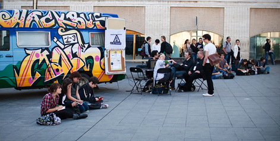
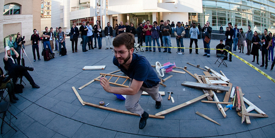

FREEDOM x WEB:
The public, open, participatory, transparent, remixable nature of the web has been integral to its growth and must be revealed, defended, celebrated. If it’s not open all the way down, it’s not the web.
“We have learned that essentially you need to teach people by making them play very quickly.”
Hacking
What does hacking have to do with learning, freedom, and the web?
Using your hands is one of the best ways to learn by doing. It taps into a part of our brains that gets undernourished when we spend too much time in front of screens, and helps reach people with different learning styles. Hacking at the level of hardware is essential if we’re to keep the creation and use of the Internet truly free, as mass-produced devices necessarily limit creation in favor of consumption. Plus, it builds community, develops problem-solving skills, is creative, and fun!
Check-out Arduino
As Johannes Grenzfurthner, proprietor of the Hackbus, put it:
The main problem with technology nowadays is that the means of production are still very centralized. You have all the freedom of information you want on your iPhone, you can blog and tweet and do whatever you like, but somebody had to build this thing somewhere in China in extremely bad working conditions. As long as we cannot download our iPhones for free, there’s a problem.
At the Festival, DIY hacktivists from Europe and the U.S. showed how programming can escape the screen and move into the public square. Membership on Hacker Planet included Monochrom’s Hackbus from Berlin, the Arduino team from Italy, and Alison Lewis’s Switchcraft from California.
Maybe we can’t make our own iPhones yet, but tools like Arduino are the first steps in open-source hardware. Begun about five years ago, Arduino:
is an open-source electronics prototyping platform based on flexible, easy-to-use hardware and software. It’s intended for artists, designers, hobbyists, and anyone interested in creating interactive objects or environments.
Arduino can sense the environment by receiving input from a variety of sensors and can affect its surroundings by controlling lights, motors, and other actuators. The microcontroller on the board is programmed using the Arduino programming language (based on Wiring) and the Arduino development environment (based on Processing). Arduino projects can be stand-alone or they can communicate with software on running on a computer (e.g. Flash, Processing, MaxMSP).”
New applications of Arduino are being invented all the time—that’s the beauty of an open platform. A short list of what people have come up with so far includes: the Cupcake CNC (an affordable 3-D printer by Makerbot), a programmable coffee machine, a wearable micro-controller called the Lilypad, and a DIY Segway (a self-balancing personal transportation device).
Massimo Banzi, a founder of Arduino, gave a funny keynote with elegant slides, about how he developed Arduino as “a tool for teaching electronics to designers.” His little box emerged as a great metaphor and case study for all kinds of teaching that leads people gently outside of their established comfort zones.
{kind=link}
Banzi explains:
Essentially I’m a geek. I studied electrical engineering. Designers don’t have electronics backgrounds—they think visually. We wanted to turn electronics and software into a creative medium available to anybody. The Arduino came from five years of experimentation. We figured that we could teach programming with this thing very quickly, by using hardware, instead of just pushing pixels on the screen. It’s the first piece of practical open source hardware.
It’s a hands-on teaching methodology. In graduate school, I had the advantage over my friends because I knew how the story ends! I learned by plugging wrires: no explosion? no fire? no smoke? Good, I learned something. So I started teaching like I learn as a kid. We bring people a child’s open mind and exploration. And our community is incredibly important in the process. Our Wiki we call the Playground: http://www.arduino.cc/playground/
And we teach workshops in the weirdest places. We discovered that people come to our workshops to find 10 or 20 like-minded people. They learn more from each other than from us.” Arduino has held workshops everywhere from community hackerspaces like Budapest’s Kitchen and NYC Resistor, to university programs like NYU’s ITP, to companies like Apple, IDEO and Panasonic.
We found that if you put young engineers and artists in the same place and shake, you get weird outcomes. You come spend some time there, they look at you see if you fit into the whole system—If you’re a nice person who understands how to interact with other people. Then you’re in.
OWN YOUR OWN
IF YOU CAN’T OPEN IT
YOU DON’T OWN IT
As they explained on their blog, the Arduino crew built a robot at Drumbeat:
We wanted to give back to the community what we’ve been doing in the Arduino Playground: Mozduino! We worked on a robot that was able to avoid the obstacles. The first version was based on the sensing obstacles with light (using LDR) the second using ultrasounds (using PING), the DC motors are driven with Mosfet Modules. We could control the number of rounds of the wheel (and so its direction) by using an HALL sensor with a magnet.
{kind=link}
PROJECT:
HACKBUS
“Hackbuses (or mobile hacklabs or hack vehicles) are a low-threshold way of bringing the culture of hacking to the people. They are migratory learning and teaching units, taking the talented hackers and their ideas out of middle-class urban centers and bringing them to people who might not otherwise be aware of the possibilities available to them.”
Hackbus grew out of monochrom, a European art-tech collective interested in DIY, hacking, art, counter-culture, and guerilla communication. The monochrom collective, the founders of hackbus.info, believes a new hardware DIY movement needs to be started, and other approaches on education are possible. Direct,non-hierarchical education. Interchange. Exchange. Classic educational approaches are always top-down and have a strong feeling of authority. What we need is open community labs where interested folks can come together to share resources and knowledge to build and make things. We need a root movement of doing strange things with hardware which was not intended (aka “hacking”) because only when we use things in ways other than they were planned can something new arise. We follow a long tradition of this nomadic approach to bring self-empowerment to the people. These units can be everywhere. And they should be everywhere. Start one yourself!
{kind=link}
Hackbus events during the festival included making wearable LED s, a Sculpture Mob (complete with faux police raid), and a Massively Multiplayer Thumb War.
The Sculpture Mob:
Even art hackers are often helpless against official “art in public space!” Oh, the horror! Those endless atrocities! All of them labeled “sculpture in public space!” Ah! Monstrous “public art installations” on roundabouts, on main streets, in shopping malls! It is time to reclaim the street art! It is time to create your own public art! Get your hammers! Get your welding equipment! It’s time for Sculpture Mobs!
{kind=link}
Check-out Scratch
{kind=link}
The fedora-clad Johannes Grenzfurthner and his compatriots brought a certain outlaw spirit to the Festival (it didn’t hurt that the police wound up towing their vehicle). From the graffitti-covered bus, which brought them all the way from Berlin and back, to extralegal “sculpture mobs” and a massively multiplayer thumb war, the Hackbus crew was there to remind the group that hacking is supposed to be fun. Yet Johannes brings some very serious theory to all this playing around: “We’re classic European leftists. A little bit melancholic, but you can count on us.”
So who is the hackbus crew, really?
We are part of this art and technology collective called monochrom http://www.monochrom.at/english/ which started a long, long time ago in 1993, before the web revolution actually started. There was the Internet, but no World Wide Web. Even in universities, only nerds were using this tool.
We started monochrom with a fanzine of cyber culture and cyber politics, to share the stuff we find interesting and help people find more interesting stuff.
Okay, so you have a hidden agenda. How does hacking fit in?
With a friend, I co-authored a small pamphlet on hacking spaces as a reaction to this Cambrian explosion of hackerspaces. The basic concept is pretty old—the first were in the 60s or early 70s, more like workshops. Because of the economic crash two or three years ago, many people who used to work in tech companies were freed from their boring jobs sitting behind a desktop, so they ended up founding hackerspaces for tinkering around and building interesting things.
Some places are just like breeding grounds for Google, full of white guys, which is a little bit sad. So the idea with the Hackbus is to lower participation barriers by going into rural areas and inviting more diversity.
We started like a year ago in Austria. We also started the hackbus.info, which is a Wiki open platform community tool.
What kinds of projects specifically can you do with people with the hackbus?
We focus on things you can do, where you can actually build stuff in under five minutes, like LED throwies and Arduino kits.
We’ll show people how to do their own documentation. It’s cool if you build your own gadget but it’s better if people can actually see how it works.
So what are your thoughts on how this all relates to education?
Education, especially in the Western world, has almost always a negative connotation. Especially if you talk to normal everyday people, nobody is super excited about going to school. It’s there, it’s something the state provides, but most of the time it’s pretty bad. Yet people inform themselves on the Internet constantly, every day. There are videos on YouTube where people show this is what you do, and then you do that. With our hackbus projects, we take people to the next level of not buying a kit and building it but learning the grammar of doing something yourself by watching someone else do it. So the basic way you teach stuff changes. So the basic way you teach stuff changes.
Bringing hacking “to the people” also means reaching populations who haven’t historically felt empowered by technology—like women, for example.
That’s Alison Lewis’ life’s work. Alison is a designer with a degree from Parsons School of Design, where she also teaches fashion technology and fashion communication. She’s the proprietor of Switch, “a technology life and style blog which showcases innovative design, fashion and topics from a female perspective. Switch is not just another tech blog about gadgets or digital design, but rather a social look at technology through the genres of fashion, beauty, design, and craft.”
Check-out Crash Space
Let’s All Play Together! Wednesday was opening night and I set up my examples from Switch Craft at the Science Fair and demonstrated how to make them. The participants were inquisitive and encouraging. Each question of how and why was followed by a statement of confirmation that we do indeed need more women in technology who love fashion.
About an hour in, it died down and people went inside to hear Joi Ito, CEO of Creative Commons. I went for the free snacks and wine. It was there that I made a friend. His name is Massimo, one of the creators of Arduino. If you don't know it already, Arduino is an open-source hardware platform that is used around the world by artists, designers, architects, teachers, scholars, and just about anyone who wants to create an experience with the physical world. He’s famous among the DIYers, such as myself, though admittedly I did not recognize him and one of his entourage was kind enough to remind me.
We talked and the Arduino crew was very complimentary and supportive. I was honored to talk to them as this is a community I haven’t been a part of in awhile because it involves programming and hardware wiring which are a level two for my readers. I tend to stick with level one. At least I did, but after hanging with Massimo, I think I am ready to graduate Switch readers to another level of learning.
I learned that the Arduino platform was created in Italy in a creative design program at the Interaction Design Institute Ivrea. I had known about this school years ago, but it was shut down in 2005 for no apparent reason, just as it was gaining success.
He smiled as I explained my passion to get fashion designers, craftsman, and artists into creating with technology. Then he gave me a cute purple Arduino pin with a heart on it and pointed at one of my pins and said, “I’ll trade you one of mine for yours. I really like what you are doing here, please feel free to come and hang out with us in the hacker space tomorrow.”
His smile made me smile, and that is how friendships are born.
Check-out Tangible K